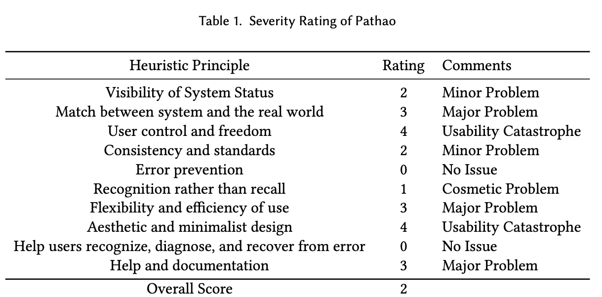
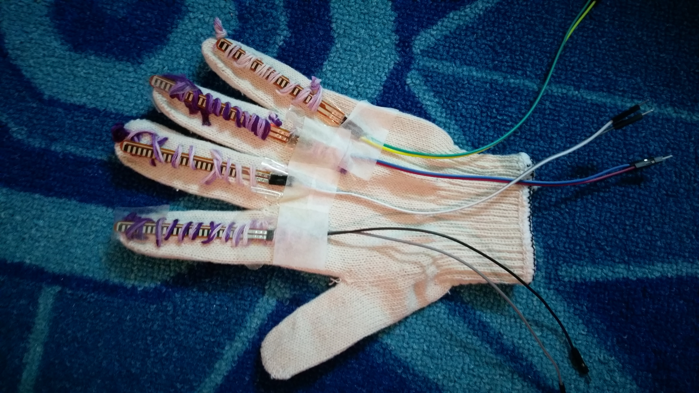

Projects related to RL, HCI and Virtual Reality
Reinforcement Learning (RL)
Project 1 : Reinforcement Learning for VR Application to Automate Testing
Introduced pedagogical learning among RL agents for a naive agent to learn from an expert agent about paths using Q-Learning. The idea
was to automate the testing scenario with RL agents, you may have a look at the full paper that was published at HCII'2022.

Details:
- As you can see there was an incident with the truck and the trigger zone around the incident is marked.
- The elevation lands are in levels, which represents a mountain.
- The trainee location is at the bottom left.
-
Now where should the trainee learn to go to navigate the incident without being too close to the truck as
oil/gas dripping might be dangerous, but yet close enough to understand in detail about the situation and read the labels on the truck?
-
Since we don't want humans to do this, we want to automate this with RL agent using reinforcement learning.
- So the problem is : navigate to a safe space with reward and punishment system.
- But how is this solving the overall problem? We need to connect this with the actual problem of building the VR system with the 3D environment.
- Also, we didn't have enough people to try on the VR environment and provide enough data for their experiences, so let's automate the testing system!
- Why need humans to test the VR system? This requires shipping the VR to their places and using thier time. What if we could use AI agents instead of humans?
- This would obviously need a lot of work, but let's initiate the process and see how far I can go.
- Narrowing the borad problem down, now we want to focus on automating one aspect of the whole VR application : navigating to a safe space to observe the incident.
-
Also, we don't want to train all new testers from scratch about how to navigate to a desired position. We want one tutor agent who has the best knowledge, and then
other new agents can learn from this tutor
-
Tried using OpenAI environments, but could not change them to the environment I wanted, so opted for creating a simple environment with basic python.
- So I train one agent properly with the Q-Learning algorithm and placing rewards/punishments on the map (Details about the functions are on the paper)
-
I introduce a pedagogical system where naive agents can get the knowledge from the trained tutoring agent, by simply making the Q-Learning table of the
tutor agent sharable.
- Now , whenever the naive agent is confused, it can also lookup the Q-table of the tutor agent, and be guided!
HCI Projects
Project 2 : Usability Study on Pathao Application
A usability survey on a ride-sharing app called 'Pathao', based in Bangladesh.
Project 3 : Hand Gesture Interpreter

A glove made for the disabled people to ease their communication with the help of arduino and flex sensors.
It is designed to assist the lives of deaf,mute and aged people, which we believe is necessary in Bangladesh.
This cotton glove is comfortable and flexible to use where certain bending angles and fingers represent particular meanings.